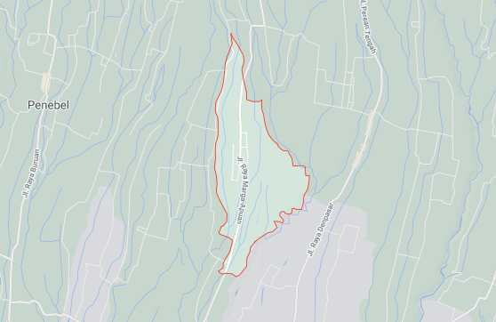
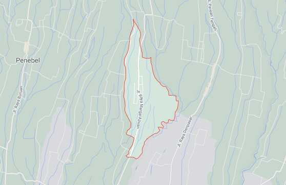

Desa Petiga
Petiga adalah desa di kecamatan Marga, Kabupaten Tabanan, provinsi Bali, Indonesia
 Lihat di Google MapTabanan - Berangkat dari sekedar hobi dengan menanam tanaman hias, kini warga Desa Petiga sukses menjadikan tanaman hias sebagai ladang bisnis yang menjanjikan. Saat memasuki Desa Petiga yang berada di Kecamatan Marga, Tabanan, Bali, pengunjung disuguhi suasana nyaman dan asri. Tanaman hias yang cantik dengan aneka jenis tanaman yang dipajang di depan rumah dan sepanjang jalan Desa Petiga. Hampir setiap halaman rumah warga penuh dengan jenis tanaman hias yang tampak tertata rapi. Berdasar informasi warga, budidaya tanaman hias sudah berkembang sejak tahun 1995. Kini di desa tersebut hampir 90 persen warganya menjadikan tanaman hias sebagai salah satu pekerjaan pokok dan bukan lagi menjadi pekerjaan sampingan. Perbekel Petiga I Made Darmadiyasa mengakui, saat ini 97 persen dari jumlah penduduk di Desa Petiga dengan 1.780 jiwa menjual dan memelihara tanaman hias dirumahnya. Bisa dilihat halaman depan rumah dan lahan milik warga ditanaman beragam jenis tanaman hias jenis. "Dulunya desa ini tanaman hias hanya sebatas hobi dan sebagai pekerjaan sampingan warga desa. Karena sebagian besar warga memilih profesi sebagai pegawai swasta, PNS, dan petani. Namun kini tanaman hias pekerjaan karena membantu perekonomian warga," ujar Darmadiyasa. Budidaya tanaman hias muncul sekitar tahun 80-an, awalnya hanya dilakukan segelintir orang di desa setempat tepatnya di Banjar Petiga Semingan yang didasari hobi bercocok tanam. Dulunya hanya ada bibit dari tanaman hias jenis puring, kemudian semakin banyak merambah ke tanaman yang lainnya seperti andong, pisang-pisangan, kembang seribu, pucuk merah, dan tanaman hias lainnya. Hingga akhirnya, sekitar tahun 1995 Desa Petiga mulai berkembang pesat, karena banyak warga dari luar yang tertarik untuk mengambil atau membeli tanaman hias di Desa Petiga. Warga desa akhirnya mulai menjual dan memelihara tanaman hias. "Awalnya hanya dari hobi bercocok tanam 3 orang warga Banjar Petiga Semingan, sehingga mereka banyak punya tanaman hias di rumahnya. Kemudian berkembang-berkembang di seluruh banjar yang ada di desa," kata Darmadiyasa. Dirinya menambahkan, setelah berkembang di setiap banjar yang ada di desa, warga mendapat bantuan sebesar Rp35 Juta untuk membuat kelompok yang mengembangkan budidaya tanaman hias. Kini sudah ada tiga kelompok dari tiga banjar yang ada di Desa Petiga membudidaya tanaman hias. "Bahkan desa kami kini dijuluki kawasan agropolitan tanaman hias di Tabanan," katanya. Darmadiyasa mengungkapkan, budidaya tanaman hias sangat membantu perekonomian masyarakat. Warga kini mendapat penghasilan tambahan dari menjual tanaman hias. Harga tanaman hias bervariasi tergantung dengan jenis tanaman. Pendapatan yang diperoleh warga yaitu mulai dari Rp10 ribu hingga ratusan ribu tergantung dari jenis tanaman. Dengan rata-rata hasil penjualan tanaman hias perhari Rp500 ribu sampai Rp1 juta. "Untuk pelanggan tidak hanya datang dari warga yang ada di Tabanan. Tetapi juga pelanggan tanaman juga dari hotel, villa, restaurant di Bali. Ada juga sebagian pelanggan tanaman hias dari luar Bali seperti Jawa dan Sumatera. Diluar Bali dikirim melalui jasa pengiriman," tandasnya. [NN]
Tabanan, balipuspanews.com -Dukungan kembali didapat pasangan calon Gubenur dan Wakil Gubernur Bali nomor urut 1, Wayan Koster-Tjok Oka Artha Ardhana Sukawati (Koster-Ace). Kali ini giliran Desa
Tabanan - Tak banyak yang tahu, Desa Petiga yang terletak di Kecamatan Marga memiliki potensi di bidang tanaman hias. Yup, sejumlah tanaman hias seperti kucai, taiwan, dan anggrek bandung tampak
Tabanan – Masyarakat Desa Pekraman Petiga Marga berjanji mengawal dan memenangkan paket yang diusung PDIP yakni Ni Putu Eka Wiryastuti – I Komang Gede Sanjaya (Eka – Jaya) dalam pilkada
Petiga adalah desa di kecamatan Marga, Kabupaten Tabanan, provinsi Bali, Indonesia
 Lihat di Google Map© 2020 Desa Petiga
.jpeg)
.jpeg)